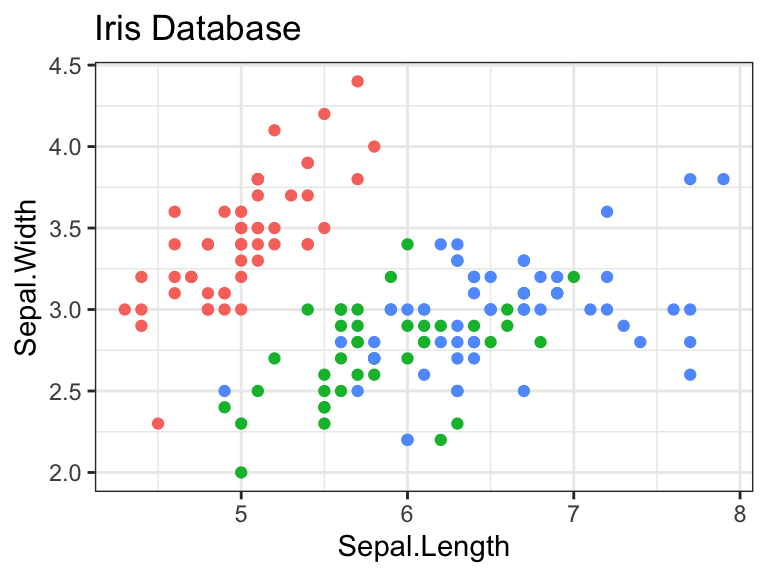

# selected libraries
library(tidyverse)
library(here)
cat(R.version.string)R version 4.5.1 (2025-06-13)R is the default computational engine for Quarto. No further action is necessary. Just place the R code in the R code chunk generated by /R.
# selected libraries
library(tidyverse)
library(here)
cat(R.version.string)R version 4.5.1 (2025-06-13)echo=FALSE{r echo=FALSE}
# note use of include=FALSE as well
qnorm(0.95)[1] 1.644854eval: FALSECan be place within the parenthesized r statement, or in the main statement preceded by the code option symbols: #| eval: false
{r}
#| eval: FALSE
qnorm(0.95)(no output)
code-fold: TRUE{r}
#| code-fold: TRUE
theme_set(theme_bw())theme_set(theme_bw()){r}
#| fig.width: 4
#| fig.height: 3
#| cap-location: margin
#| fig-cap: "Figure half the width"
library(tidyverse)
ggplot(iris, aes(Sepal.Length, Sepal.Width, color=Species))+
geom_point(show.legend=FALSE)+
ggtitle("From Iris Database")
| mpg | cyl | disp | |
|---|---|---|---|
| Mazda RX4 | 21.0 | 6 | 160 |
| Mazda RX4 Wag | 21.0 | 6 | 160 |
| Datsun 710 | 22.8 | 4 | 108 |
| Hornet 4 Drive | 21.4 | 6 | 258 |
| Hornet Sportabout | 18.7 | 8 | 360 |
| Valiant | 18.1 | 6 | 225 |
You can also place tables in the margin of your document by specifying column: margin. kable allows for striped rows - handy for small tables like this.
{r}
#| column: margin
knitr::kable(
mtcars[1:6, 1:3]
)Set aside some text, math or images in the margin. In this case, it is a side comment that does not detract for the main proof.
We know from the first fundamental theorem of calculus that for \(x\) in \([a, b]\):
\[\frac{d}{dx} \left( \int_{a}^{x} f(u)\,du \right)=f(x).\]
::: column-margin
We know from *the first fundamental theorem of calculus*
that for $x$ in $[a, b]$:
$$\frac{d}{dx} \left( \int_{a}^{x} f(u)\,du \right)=f(x).$$
:::Asides allow you to place content aside from the content it is placed in. Asides look like footnotes, but do not include the footnote mark (the superscript number).
::: aside
This is a span (div) that has the class `aside` which places
it in the margin without a footnote number.
:::This is a span (div) that has the class `aside` which places it in the margin without a footnote number.